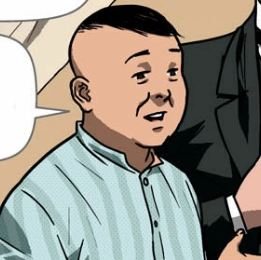

𝓶𝓪𝓲𝓷 𝓬𝓱𝓪𝓻𝓪𝓬𝓽𝓮𝓻𝓼


𝓶𝓪𝓲𝓷 𝓬𝓱𝓪𝓻𝓪𝓬𝓽𝓮𝓻𝓼 |
||
| 𝚗𝚊𝚖𝚎 | 𝚌𝚑𝚊𝚛𝚊𝚌𝚝𝚎𝚛 | 𝚍𝚎𝚜𝚌𝚛𝚒𝚙𝚝𝚒𝚘𝚗 |
| Crisostomo Ibarra | |
Crisostomo Ibarra, the son of Don Rafael Ibarra, studied in Europe for at least 7 years before going back to the Philippines because of his father's death. Many readers of this novel would often associate Crisostomo Ibarra with the writer, Jose Rizal, because of their similarities. Ibarra also has a love interest, Maria Clara, whom we will meet later on in the story. |
| Maria Clara | |
Maria Clara is the female lead in the story. She is the daughter of Don Santiago or Kapitan Tiago and Pia Alba. She was raised by her Tiya Isabel since her mother passed away giving birth. She was raised to be very religious and even studied in a beateryo, a school or institute for nuns. |
𝓼𝓲𝓭𝓮 𝓬𝓱𝓪𝓻𝓪𝓬𝓽𝓮𝓻𝓼 |
||
| 𝚗𝚊𝚖𝚎 | 𝚌𝚑𝚊𝚛𝚊𝚌𝚝𝚎𝚛 | 𝚍𝚎𝚜𝚌𝚛𝚒𝚙𝚝𝚒𝚘𝚗 |
| Kapitan Tiago |  | Don Santiago, also known as Kapitan Tiago, is very generous to the people in the story. He is also very religious and collects different statues of saints. Though Kapitan Tiago is kind and generous to everyone, he makes sure that he still has strong connections with the Spaniards, especially the priests, hence why he collects statues of saints. |
| Padre Damaso | Padre Damaso is a Spanish priest that is close to the family of Kapitan Tiago. He, like other priests of that time, abuses his power a lot. One of those instances was when he violated Pia Alba, causing her stress throughout her pregnancy with Maria Clara. | |
𝓫𝓻𝓲𝓮𝓯𝓵𝔂 𝓶𝓮𝓷𝓽𝓲𝓸𝓷𝓮𝓭 |
||
| 𝚗𝚊𝚖𝚎 | 𝚌𝚑𝚊𝚛𝚊𝚌𝚝𝚎𝚛 | 𝚍𝚎𝚜𝚌𝚛𝚒𝚙𝚝𝚒𝚘𝚗 |
| Tiya Isabel |  |
Tiya Isabel is the sister of Kapitan Tiago and Maria Clara's aunt. She was the one who helped raise Maria Clara since she was a baby and acted like a mother figure. |
| Pia Alba |  |
Pia Alba is the mother of Maria Clara and the wife of Kapitan Tiago. Pia Alba had a very hard time in conceiving a child. She did everything and that includes praying a lot and doing religious practices. Fortunately enough, she was able to conceive and soon had Maria Clara. But sadly, she passed away when giving birth and could not raise her daughter. |